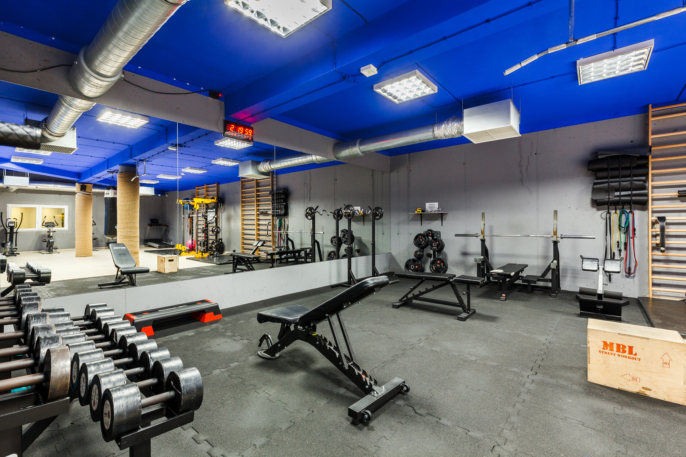
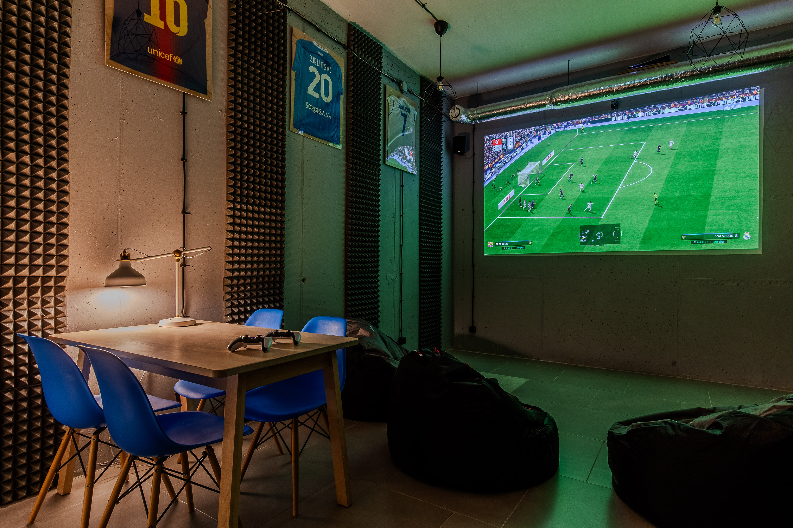
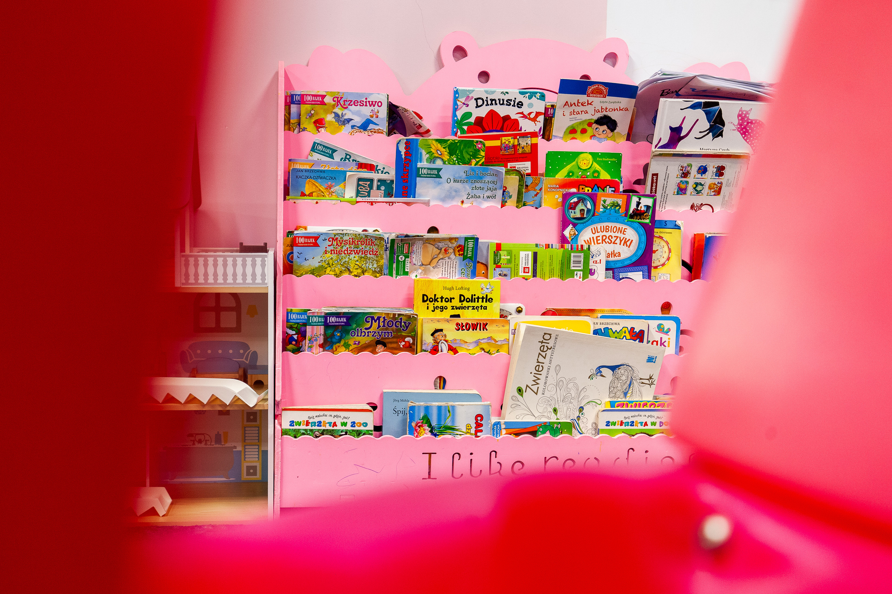
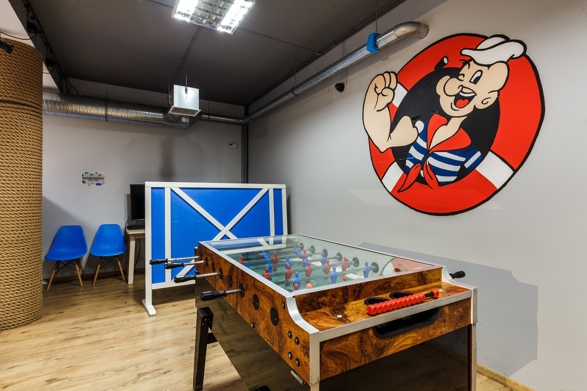
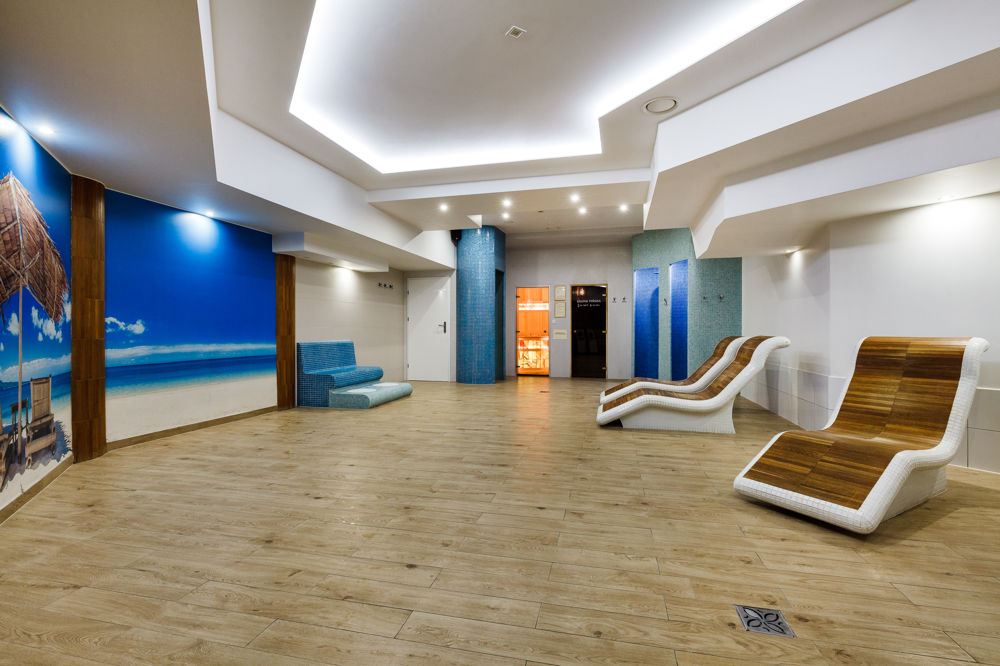
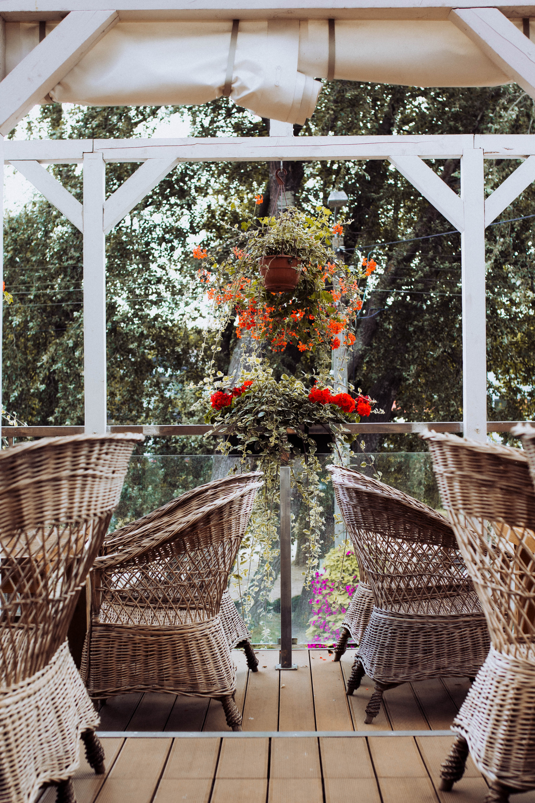
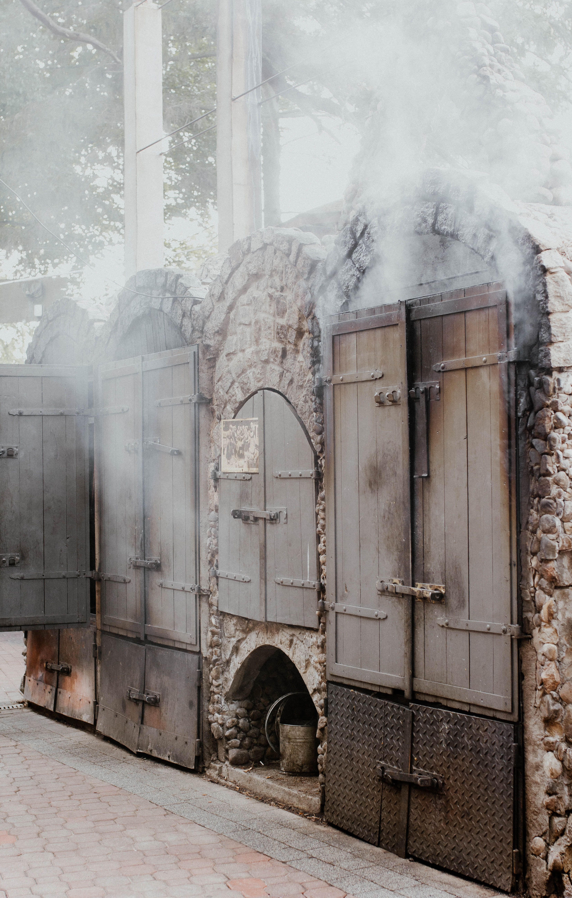
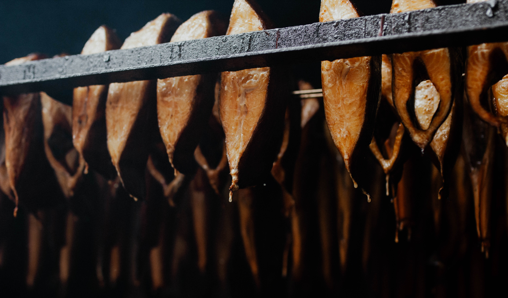

Check-in
Check-in ab 16:00, Check-out bis 10:00.
WiFi
WiFi: PILICE.GOŚCIE
Passwort: pilice123
Freizeitbereich - Papaj Resort
Unsere Gäste können die Attraktionen des Papaj Resort täglich nutzen von 8:00 bis 21:30.
- Indoor-Basketballfeld
- Unihockey
- bunter Spielraum für Kinder
- Tischtennis
- Billard
- Kicker
- Airhockey









Pool & Sauna - Papaj Resort
Entspannung im Wasserbereich verfügbar von 8:00 bis 15:00.
- Innenpool
- Saunabereich
- Kinderbecken
- Salzgrotte





Massagen & Anwendungen
Schau dir das SPA-Angebot des Papaj Resort an und buche dir etwas Entspannung!
Fahrradraum
Ebene -1. Folge den Schildern an den Wänden. Fahrräder und Nordic-Walking-Stöcke sind kostenlos.
Papaj Restaurant
Das Restaurant Papaj ist das ganze Jahr über geöffnet und bietet ein Frühstücksbuffet, Fischgerichte, vegetarische Speisen sowie ein Kindermenü.



Räucherei Przypiecek
Ein legendärer Ort in Jastrzębia Góra, direkt neben dem Restaurant Papaj. Geöffnet von Mai bis September. Bietet leckeren geräucherten und gebratenen Fisch in einzigartiger Atmosphäre.



Gästeguide
Die besten Orte in der Umgebung für Tagesausflüge in einem praktischen Guide.
PDF ansehenHäufig gestellte Fragen (FAQ)
Was tun, wenn mein Türcode nicht funktioniert?
Wenn Sie keinen Schlüssel dabei haben, rufen Sie uns unter der im Footer der Seite angegebenen Nummer an.
Darf auf dem Gelände geraucht werden?
In allen Apartments gilt ein striktes Rauchverbot. Das Rauchen ist nur auf den Balkonen und in den Gärten gestattet. Ein Aschenbecher befindet sich in der Badezimmerschublade.
Wo befinden sich die Mülltonnen?
Die Mülltonnen befinden sich an der Einfahrt zur Tiefgarage. Der Zugang erfolgt über die Tiefgarage oder vom Innenhof aus.
Wo ist das nächste Geschäft?
Delikatesy Skorpion (Rozewska 1) ist ein kleiner, aber gut sortierter Laden direkt um die Ecke, der auch sonntags geöffnet ist. Anfahrt
Wo ist der nächste Supermarkt?
Am nächsten liegt der Polo Market, 160 m von Pilice entfernt. Anfahrt
In Mieroszyno, 4 km von Pilice entfernt, gibt es eine Biedronka-Filiale. Anfahrt
Wo ist die nächste Tankstelle?
Am nächsten in Łebcz, die lokale Tankstelle Renusz, 8 km. Anfahrt
Weiter entfernt, in Władysławowo, gibt es Orlen und CircleK, 10 km.
Orlen-Anfahrt
CircleK-Anfahrt
Wo ist die nächste Apotheke?
Die Apotheke Bursztynowa befindet sich in der Królewska-Straße 9, etwa 300 Meter von den Apartamenty Pilice entfernt. Anfahrt
Wo finde ich den nächsten Taxistand?
Der Taxistand befindet sich direkt neben dem Hotel Ara. Außerhalb der Saison empfehlen wir, Taxis aus Władysławowo zu bestellen. Anfahrt
Wo ist die nächste Bushaltestelle?
Die nächste Haltestelle ist ganz in der Nähe, nur 190 Meter von Pilice entfernt. Anfahrt.
Nach Gdynia und Karwia gelangen Sie mit der PKS-Buslinie 650. Nach Puck und Władysławowo mit der Linie 668.
Fahrplan hier prüfen.
Wo ist das nächste Krankenhaus?
Städtisches Krankenhaus in Puck, 18 km. Anfahrt
Fachkrankenhaus in Wejherowo, 38 km. Anfahrt
Kann ich vor Ort mein Elektroauto laden?
Ja, direkt vor dem Gebäude befinden sich zwei Ladestationen, an denen Sie Ihr Elektroauto für 2 zł pro kWh laden können. Wenden Sie sich an die Rezeption, um eine Ladestation zu nutzen.